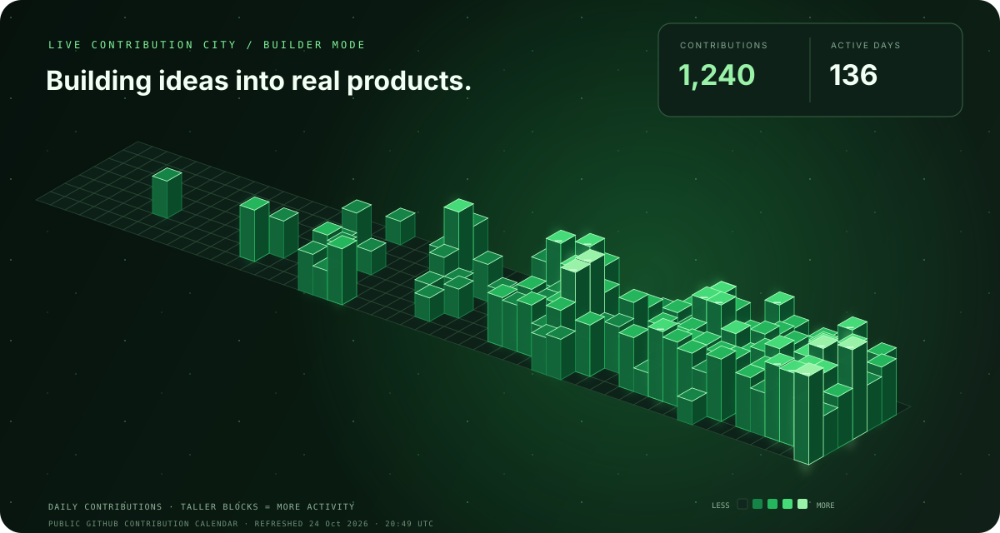

PUBLIC ACTIVITY / BUILDER MODE
Contribution City
A year of small steps, shaped into one living skyline.
Choose a date, inspect its building, or play through the year.
Open GitHub activity ↗Contributions—
Active days—
Streak at date—
Longest streak—
Loading public contribution data…
——
Select a building to inspect its date and contribution count.
View GitHub contribution calendar ↗Each building represents one date from GitHub’s public contribution calendar. Counts may exclude private activity. Streaks count consecutive calendar dates with at least one contribution, using GitHub’s displayed date labels.
Interactive data is unavailable right now. Here’s the latest static city.
